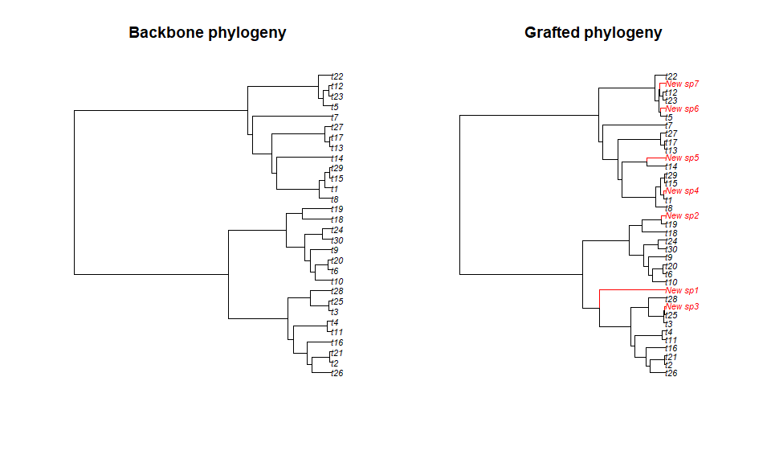
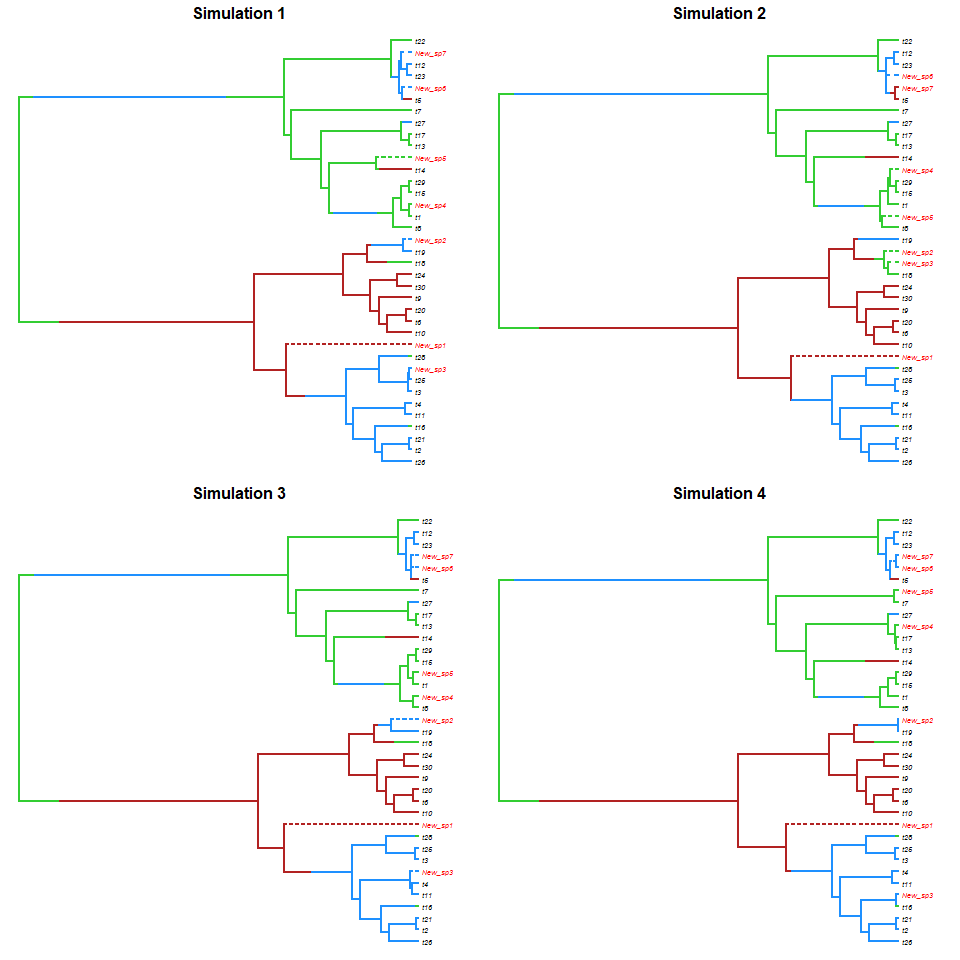

The goal of the R package phylograftR is to graft missing lineages on time-calibrated phylogenies using available taxonomic, evolutionary, and biological information. It combines taxonomic assignments, which define the target clades where each missing taxon must be grafted and the excluded subclades where it must not, with diversification modeling to infer the divergence times of the imputed branches. Critically, it can also use species attributes, such as categorical traits, discretized continuous traits, or biogeographic ranges, to further refine the sections of the backbone phylogeny where each missing lineage can be grafted.
📜 Contents
🎯 Summary
Why use phylograftR?
Most time-calibrated phylogenies are incomplete: genetic data are missing for many described species, so a large part of the taxa of a group is absent from the tree. Yet many analyses need every taxon to be a tip of the tree, or are sensitive to the missing ones such as maps of phylogenetic diversity, inferences of rates of trait evolution, state- and range-dependent diversification models, or historical biogeographic reconstructions. The taxa missing from the tree are not unknown, though: they usually belong to named groups (genera, families, or other clades) that are in the tree, and often come with informative attributes on their traits or ranges. The task is thus to graft the missing lineages at plausible positions on the tree, using all information available, while accounting for the fact that these positions are uncertain.
What novelties does phylograftR bring?
phylograftR builds on the TACT framework (Taxonomic Addition for Complete Trees; Chang et al., 2019), a stochastic polytomy resolver that uses the taxonomy to place missing taxa within their target taxonomic groups, with divergence times drawn from birth-death models fitted locally on each target group, so that diversification rates can vary across the tree.
phylograftR brings this approach to R and extends it in three ways:
- Excluded subclades. Taxonomic assignments can also tell where a taxon does NOT belong: subclades of the target clade can be excluded from grafting. For instance, if a missing lineage from the Neotropics is to be grafted within its target Genus, you may wish to prevent it within a subclade that occur exclusively in Afrotropics.
- Species attributes. Grafting can be restricted to the parts of the target clade branches whose state is compatible with the known attributes of the missing taxon to graft. This is equivalent to using excluded subclades to restrict grafting within a target group, but while explicitly accounting for the species attributes used for such restrictions. States can be categorical traits, discretized continuous traits, or biogeographic ranges.
-
Missing clades. Besides single taxa, entire missing clades can be grafted as a unit, sister to a clade of the backbone phylogeny, with their internal diversification process simulated under the same birth-death model than their sister-clade. Both types of missing lineages (taxa and clades) can be grafted in one unique run with
graft_missing_taxa_and_clades().
Grafting is stochastic, so phylograftR is designed to produce sets of grafted phylogenies (several simulations, and optionally several stochastic maps of the species attributes used as constraints), so that the uncertainty in the position of imputed taxa can be propagated to downstream analyses.
When to use phylograftR?
Grafting is most useful when:
- the backbone phylogeny is moderately to strongly incomplete;
- you have reliable taxonomic information to place the missing taxa;
- your downstream analysis requires them as tips of the tree.
Analyses that can directly use sampling fractions, or that run on a well-sampled phylogeny, may not benefit from the additional complexity.
When the phylogeny is extremely sparse, or when the taxonomy is the main information available, methods based on higher clades (i.e., family-level) may be more appropriate to limit uncertainty. When molecular data are available for the missing taxa, it is recommended to use phylogenetic inference methods designed for this purpose, rather than impute the missing taxa without accounting for the available phylogenetic information.
⚙️ The phylograftR workflow
1. Input. The user provides a backbone phylogeny (rooted, binary, ultrametric) and a missing_taxa_list describing the taxa to graft. Each taxon is assigned to a target clade (or, for missing clades, to a sister clade) defined by the tips of the backbone that enclose it, i.e., a pair of tips whose most recent common ancestor (MRCA) is the target clade, or a single tip for a terminal branch. The list can optionally include, per taxon, tips to define excluded subclades, and the states of a trait where the taxon can be grafted (i.e., allowed states).
missing_taxa_list can be imported from external tables with import_missing_taxa_list(), or built from a data.frame object within R with build_missing_taxa_list(). The missing_taxa_list can also cover missing clades (see step 4).
2. Available branches and Attribute-based grafting. For each taxon, the branches of the backbone available for grafting are those of its target clade (and, optionally, its stem branch), minus the excluded subclades.
If a stochastic map (i.e., simmap) is provided, a taxon is only grafted on branch pieces in its allowed states, and the grafted lineages inherits the state of the graft point. Several traits can be used jointly, and a set of stochastic maps (multiSimmap) can be used to account for the uncertainty in the evolution of the trait: the grafting is then repeated with each map.
Biogeographic ranges can be treated as sets of areas, so that a taxon known to occur in area “A” can be grafted on branches whose range is “A”, “AB” or “ABC”. Continuous traits can also be used to constrain grafting after being discretized into categorical states.
Prior to any run, the validity of the grafting plan can be assessed with check_grafting_plan() to detects the taxa with no or little branch available given the constraints.
3. Nested grafting under a diversification model. Target clades are processed from the smallest to the largest, so that taxa of larger clades are grafted on a tree that already includes the taxa of the clades nested within, and can attach to their branches.
Two methods are available in graft_missing_taxa() for drawing where taxa are grafted:
-
"BD_clades"(default, recommended): a birth-death model is fitted on each target clade (or on the smallest enclosing clade with enough tips, if the clade is too small), with a sampling fraction that accounts for the missing taxa and, optionally, for unsampled species (total richness of clades). The divergence times of all the missing taxa of the clade are then jointly drawn under the fitted model, conditioned on the clade age, and each taxon is attached to a branch of the current tree that crosses its divergence time on an available (and allowed) branch piece. -
"uniform": a faster alternative, in which the grafting occurs randomly along all available branch pieces within the target clade, once excluded subclades and allowed states are accounted for, based on a uniform draw. It ignores diversification dynamics, and is mostly useful for quick explorations.
4. Missing clades. graft_missing_clades() follows the same logic, but is used to graft set of missing taxa forming a monophyletic group (i.e., missing clades). Those taxa are grafted together, as one missing clade attached to the stem branch of their designated sister clade. The divergence time of the missing clade is drawn under the birth-death model fitted on its sister clade, and the clade is grown under the same model, conditioned on its number of taxa and its stem age.
Both types of missing lineages (taxa and clades) can be grafted in one run with graft_missing_taxa_and_clades() using a single set of arguments and a unique seed.
5. Outputs and checks. The outputs are grafted phylogenies (a single one, a set of simulations, or a list of sets, one per stochastic map used as constraints) that record which tips and branches were grafted, and, if a simmap was provided, an updated simmap that includes the states of the grafted branches.
The grafting can be verified a posteriori against all constraints (check_grafting_constraints()), summarized into graft ages, divergence ages, parent clades, and inherited states (extract_grafting_info()), and plotted with the grafted elements highlighted (plot_grafted()).
See the reference page of the website for the complete list of available functions and datasets, with their documentation and examples.
Please consult the vignettes for guidance on how to prepare the input data, choose among the available grafting options, and produce visual outputs.
🏭 Applications
phylograftR is meant to build sets of comprehensive phylogenies, for macroevolutionary and biogeographic analyses that require all the known species, or that are sensitive to incomplete taxon sampling.
Here is a non-exhaustive list of the most common applications:
- Mapping phylogenetic diversity and phylogenetic endemism, or any other phylogeny-based metric of community composition.
- Estimating rates of morphological or ecological evolution, and testing the phylogenetic signal of traits, on all the known taxa.
- Fitting state-dependent and range-dependent diversification models* on comprehensive phylogenies.
- Reconstructing ancestral states and ranges, and accounting for transition/biogeographic events across all branches.
Ideally, a set of grafted phylogenies should be used to account for uncertainty in the position of imputed taxa: each downstream analysis is run on the whole set, and the results are summarized across phylogenies.
🚨 Limits and cautions for interpretation
Imputed branches are hypotheses, not data. Grafted taxa have no sequence information: they are placed at random, within the constraints, under a diversification model. The set of grafted phylogenies describes the uncertainty of this placement given the constraints, but is not a substitute for molecular data. A single grafted phylogeny should not be interpreted at the level of individual taxa. The placement is only as good as the constraints it relies on: target clades and excluded subclades are taken as ground-truth information, and a taxonomy that is not monophyletic, or a target clade poorly sampled in the backbone, will lead to mislocated taxa.
Attribute states are fixed, not modeled. A grafted taxon takes the state of its graft point, not a state predicted by its known attribute or by a model of trait evolution. Such approach does not account for potential shifts in states or ranges in the evolutionary history of the grafted lineages.
Risk of circularity in downstream analyses of trait evolution. Random placement of the missing taxa ignores the phylogenetic conservatism of traits. As a result, grafted phylogenies can erase the true phylogenetic signal of traits and inflate the estimated rates of trait evolution (see Rabosky, 2015).
On the contrary, constraining the grafting with the states of a trait forces grafted taxa to inherit the states/ranges of their grafted point. This forces a correlation between the attribute and the phylogeny, which is expected to inflate its phylogenetic signal and the support for state-dependent models.
When analyzing phylogenetic signal and/or state-dependent diversity-dynamics, consider using a different trait as constraint, or running the grafting without attribute-based constraints and compare results.
Alternative approach for continuous trait. For continuous traits, an alternative method exists to identify the optimal placement of missing taxa based on ML inference of the grafted tree conditioned to the backbone tree and trait values (e.g., phytools::locate.yeti(), Revell et al. 2015). However, such method typically requires multiple trait data sampled comprehensively across the clade of interest to perform optimally, and it can only graft one missing taxa at a time.
🔮 Perspectives
Temporal variation of diversification rates. The current implementation of phylograftR accounts for variation in diversification dynamics among clades, but it does not allow to account for temporal variation of diversification rates within target clades. A potential future implementation may consider fitting time-varying birth-death models as a possible extension.
Fossil and extinct taxa. The phylogeny backbone used as input for phylograftR must be ultrametric, with all the tips at the present, so fossils cannot be grafted at the moment. The backbone must also be rooted and binary: polytomies must be resolved beforehand (e.g., with ape::multi2di()).
🔗 References
For the TACT framework:
Chang, J., Rabosky, D. L., & Alfaro, M. E. (2019). Estimating diversification rates on incompletely-sampled phylogenies: theoretical concerns and practical solutions. Systematic Biology. https://doi.org/10.1093/sysbio/syz081
On the limits of using grated phylogenies in downstream comparative analyses:
Rabosky, D. L. No substitute for real data: A cautionary note on the use of phylogenies from birth-death polytomy resolvers for downstream comparative analyses. Evolution. 69, 3207–3216 (2015). https://doi.org/10.1111/evo.12817
Alternative grafting method based on continuous traits:
Revell, L. J., Mahler, D. L., Reynolds, R. G. , Slater, G. J. Placing cryptic, recently extinct, or hypothesized taxa into an ultrametric phylogeny using continuous character data: A case study with the lizard Anolis roosevelti. Evolution (N. Y). 69, 1027–1035 (2015). https://doi.org/10.1111/evo.12628
📩 Installation
phylograftR works on R version 4.6 or more. Be sure to have an R version that is compatible.
See https://CRAN.R-project.org/.
From CRAN, for the latest release:
install.packages("phylograftR")From GitHub, for the current development version:
# Install the installer package first
install.packages("pak")
# For a light installation (fast, no vignettes), run:
pak::pak("MaelDore/phylograftR")
# You will not have access to the vignettes/tutorials within R, but can still access them through this website.
# See the dedicated Sections below.
# For a full installation (with vignettes/tutorials available in R), run:
options(pkg.build_vignettes = TRUE)
pak::pak("MaelDore/phylograftR")🖥️ Website
A companion website is available to browse interactively the different tutorials and functions of phylograftR at this URL: https://maeldore.github.io/phylograftR/.
An overview of all functions and datasets is available here.
🕹️ Quick-to-run example
This example grafts seven missing taxa on a toy backbone phylogeny of 30 tips, using the datasets shipped with the package.
## Prepare data
# The backbone phylogeny is a time-calibrated phylogeny, and the stochastic character map (simmap) describes
# the evolution of a trait with three states (`"blue"`, `"green"`, and `"red"`) along its branches.
library(phylograftR)
data(toy_backbone)
data(toy_simmap)
# The taxonomy of the tips of the backbone is provided in a table, with one row per tip:
# the first column (`Taxa`) holds the tip labels, and the other columns are taxonomic levels
# (here, `Family`, `Subfamily`, `Tribe`, and `Genus`).
data(toy_backbone_taxonomic_table)
head(toy_backbone_taxonomic_table)
#> Taxa Family Subfamily Tribe Genus
#> 1 t26 Family_A Subfam_A2 Tribe_A2a <NA>
#> 2 t2 Family_A Subfam_A2 Tribe_A2a <NA>
#> 3 t21 Family_A Subfam_A2 Tribe_A2a <NA>
#> 4 t16 Family_A Subfam_A2 Tribe_A2a <NA>
#> 5 t11 Family_A Subfam_A2 Tribe_A2a <NA>
#> 6 t4 Family_A Subfam_A2 Tribe_A2a <NA>
# The missing taxa are described in a second table, with one row per taxon.
data(toy_missing_taxa_taxonomic_table)
head(toy_missing_taxa_taxonomic_table)
#> Taxa Type Family Subfamily Tribe Genus Target_clade Sister_clade
#> 1 New_sp1 taxa Family_A <NA> <NA> <NA> Family <NA>
#> 2 New_sp2 taxa Family_A <NA> <NA> <NA> Family <NA>
#> 3 New_sp3 taxa Family_A <NA> <NA> <NA> Family <NA>
#> 4 New_sp4 taxa Family_B <NA> <NA> <NA> Family_B <NA>
#> 5 New_sp5 taxa Family_B Subfam_B1 <NA> <NA> Subfamily <NA>
#> 6 New_sp6 taxa Family_B Subfam_B2 Tribe_B2 <NA> Gen_2 <NA>
#> Excluded_subclades include_target_clade_stem exclude_subclades_stem
#> 1 Subfam_A1;Tribe_A2a TRUE TRUE;FALSE
#> 2 Tribe_A2a;Gen_3 TRUE FALSE;TRUE
#> 3 <NA> FALSE <NA>
#> 4 <NA> NA <NA>
#> 5 Gen_1 TRUE <NA>
#> 6 <NA> NA <NA>
# `Type` states how the taxon is grafted: within a target clade (`"taxa"`), or as the sister of a clade (`"clades"`).
# For the example, keep only the missing taxa to graft within a target clade (`"taxa"`)
# and remove the ones to graft as blocks of missing clades (`"clades"`).
toy_missing_taxa_taxonomic_table <- toy_missing_taxa_taxonomic_table[toy_missing_taxa_taxonomic_table$Type == "taxa", ]
# Clades are written with taxonomic names (e.g., `"Family_B"`), or with the name of a taxonomic level
# (e.g., `"Family"`, meaning the family of the taxon, as given in the column of the same name).
# Target clades (`Target_clade`), where the taxa is known to belong,
# and excluded subclades (`Excluded_subclades`), where taxa are known NOT to belong,
# are retrieved from the taxonomy of the backbone.
# The inclusion of the stem branch as a valid placement for grafting can be fine-tuned
# for target clades (`include_target_clade_stem`) and excluded subclades (`exclude_subclades_stem`).
# Some taxa may also have `allowed_states`: the states of the branches on which they can be grafted.
toy_missing_taxa_taxonomic_table$allowed_states <- c("red", NA, NA, "blue, green", "green", NA, "blue, red")| Taxa | Type | Family | Subfamily | Tribe | Genus | Target_clade | Sister_clade | Excluded_subclades | include_target_clade_stem | exclude_subclades_stem | allowed_states |
|---|---|---|---|---|---|---|---|---|---|---|---|
| New_sp1 | taxa | Family_A | NA | NA | NA | Family | NA | Subfam_A1;Tribe_A2a | TRUE | TRUE;FALSE | red |
| New_sp2 | taxa | Family_A | NA | NA | NA | Family | NA | Tribe_A2a;Gen_3 | TRUE | FALSE;TRUE | NA |
| New_sp3 | taxa | Family_A | NA | NA | NA | Family | NA | NA | FALSE | NA | NA |
| New_sp4 | taxa | Family_B | NA | NA | NA | Family_B | NA | NA | NA | NA | blue, green |
| New_sp5 | taxa | Family_B | Subfam_B1 | NA | NA | Subfamily | NA | Gen_1 | TRUE | NA | green |
| New_sp6 | taxa | Family_B | Subfam_B2 | Tribe_B2 | NA | Gen_2 | NA | NA | NA | NA | NA |
| New_sp7 | taxa | Family_B | Subfam_B2 | Tribe_B2 | NA | Tribe | NA | NA | FALSE | NA | blue, red |
## Build the list of missing taxa from the taxonomic tables
# The taxonomic names are converted into clades of the backbone phylogeny,
# and the tables are checked against the backbone phylogeny.
missing_taxa_list <- build_missing_taxa_list_from_taxonomy(
backbone_taxonomic_table = toy_backbone_taxonomic_table,
missing_taxa_taxonomic_table = toy_missing_taxa_taxonomic_table,
phy = toy_backbone, verbose = FALSE)
# Alternatively, it is possible to build directly the missing_taxa_list object and
# fine-tune which clades to use as a Target_calde, Sister_clade, or excluded_subclades
# based on its node_ID or MRCA_tips, without the need of an explicit taxonomic classification.
# Please refer to 'vignette("format_inputs")' for a dedicated tutorial.
## Graft the missing taxa
# The taxa are grafted with the default options
# (diversification modeling with birth-death models fitted on the target clades).
# Taxa with their own `allowed_states` follow them,
# and the others are restricted to the global argument: here, the states `"blue"` and `"green"`.
# To graft both the missing taxa and the missing clades of the table in one run,
# use `graft_missing_taxa_and_clades()`: see 'vignette("combine_missing_taxa_and_clades")' for a dedicated tutorial.
grafted_phy <- graft_missing_taxa(phy = toy_backbone,
missing_taxa_list = missing_taxa_list,
simmap = toy_simmap, allowed_states = c("blue", "green"),
seed = 1234, verbose = FALSE)
## Vizualize the grafted phylogeny
# The grafted taxa can be directly compared with the backbone phylogeny:
# the grafted tips and branches are colored in red.
par(mfrow = c(1, 2))
plot(toy_backbone, cex = 0.7, main = "Backbone phylogeny")
plot_grafted(grafted_phy, use_simmap = FALSE, cex = 0.7, main = "Grafted phylogeny")
par(mfrow = c(1, 1))
## Account for the uncertainty with several simulations
# Grafting is stochastic, so a single grafted phylogeny is only one of the possible outcomes.
# Downstream analyses should ideally be run on a set of grafted phylogenies:
# Here, we use 10 simulations for a quick example.
grafted_phys <- graft_missing_taxa(phy = toy_backbone,
missing_taxa_list = missing_taxa_list,
simmap = toy_simmap, allowed_states = c("blue", "green"),
nb_simulations = 10, seed = 1234, verbose = FALSE)
## Vizualize updated stochastic maps
# Below we plot four of the simulations with their updated simmap.
# The states of the trait are kept along grafted branches
# The grafted branches appear as dashed lines, and the labels of the grafted taxa are in red.
par(mfrow = c(2, 2))
for (i in 1:4)
{
plot_grafted(grafted_phys, index = i, fsize = 0.5, ftype = "i",
simmap_colors = c("blue" = "dodgerblue", "green" = "limegreen", "red" = "firebrick"),
main = paste("Simulation", i))
}
par(mfrow = c(1, 1))
👨🎓 Advanced uses / tutorials
Tutorials are available to explore all usages of phylograftR.
They are listed below, in the companion website, and in this vignette: vignette("phylograftR").
1/ Inputs
-
Format inputs prior to grafting:
vignette("format_inputs"). -
Prepare trait data and build stochastic maps with deepSTRAPP:
vignette("prepare_stochastic_maps").
2/ Main workflow
3/ Grafting options
-
Explore options to graft missing taxa:
vignette("graft_missing_taxa"). -
Explore options to graft missing clades:
vignette("graft_missing_clades"). -
Graft both missing taxa and missing clades in one run:
vignette("combine_missing_taxa_and_clades").
4/ Checks
5/ Data types
-
Use biogeographic ranges as constraints:
vignette("biogeographic_data"). -
Combine several traits as constraints:
vignette("multiple_traits"). -
Use a continuous trait as constraint:
vignette("continuous_data").
6/ Uncertainty, reproducibility, and scaling
-
Handle uncertainty and ensure reproducibility:
vignette("handle_uncertainty"). -
Run grafting in parallel:
vignette("parallel_grafting"). -
Resume a crashed or interrupted run:
vignette("resume_run").
Alternatively, if you prefer to view the vignettes in R, you can install the package with build_vignettes = TRUE.
remotes::install_github(repo = "MaelDore/phylograftR",
dependencies = TRUE,
upgrade = "ask",
build_vignettes = TRUE)
# Access vignettes within R
vignette("phylograftR")
# You can also use this to open access to all local vignettes in an HTML Brower
utils::browseVignettes(package = "phylograftR")🐛 Found a bug?
Thank you for finding it! Head over to the GitHub Issues tab and let me know about it.
You can also send me an e-mail.
✒️ How to cite phylograftR
For any use of phylograftR:
Currently, cite the R package on CRAN:
Doré, M. (2026). phylograftR: Grafting missing taxa on time-calibrated phylogenies combining diversification modeling, taxonomic assignments, and species attributes. CRAN.r-project.org (v1.0.0). https://cran.r-project.org/package=phylograftR
Once published, cite the associated paper directly:
Doré, M., Blaimer, B. B., & Economo, E. (2026). phylograftR: Grafting missing taxa on time-calibrated phylogenies combining diversification modeling, taxonomic assignments, and species attributes. (DOI TBA)
phylograftR extends the TACT framework to enable the identification of exclusive subclades where NOT to graft missing species based on taxonomic assignments and/or species attributes. Please cite the TACT paper as a foundation work for the development of phylograftR:
Chang, J., Rabosky, D. L., & Alfaro, M. E. (2019). Estimating diversification rates on incompletely-sampled phylogenies: theoretical concerns and practical solutions. Systematic Biology. https://doi.org/10.1093/sysbio/syz081
TACT is available as Python-based software at: https://tact.jonathanchang.org/
As phylograftR relies strongly on functions designed for the phytools R package and the TreeSim R package, it is good practice to also cite these packages:
Revell, L. J. (2024) phytools 2.0: an updated R ecosystem for phylogenetic comparative methods (and other things). PeerJ, 12, e16505. https://doi.org/10.7717/peerj.16505.
Stadler T (2019). TreeSim: Simulating Phylogenetic Trees. R package version 2.4, https://CRAN.R-project.org/package=TreeSim